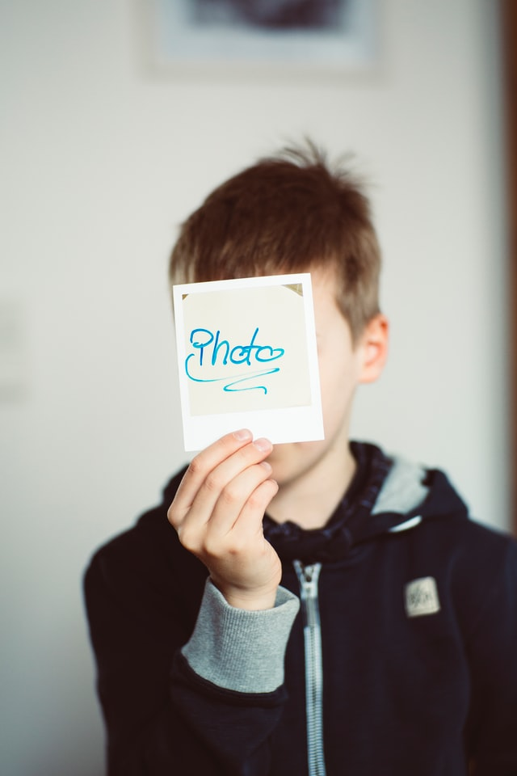

20 años de experiencia en Diseño Gráfico y Desarrollador Web
Educación
- Grado de Diseño Gráfico y de Interiorismo
- 1999-2000. E.A.O. José Nogué. Jaén
- Titulación de Experto en Autocad
- 2000-2002. E.O. San Francisco. Jaén

Experiencia laboral
- Diseñador Gráfico- Técnico de Infografía en SOMUCISA (Ondajaen rtv)
-
2002-2019. Diseños de Imagen 3D, contenido multimedia, montador y editor profesional, animador de secuencias y operador de cámara. Creación, edición, post-producción y montaje de programas para contenido televisivo, diferido y directos.
- Diseñador Gráfico- Freelance
-
20012-2022. Desarrollador de multiples proyectos de diseño, edición y post-producción. Diseño de cartelería impresa de gran formato publicitario. Edición Fotográfica.
- Desarrollador Web y Grafismo
-
2021-2022. Desarrollo de varias paginas web,Front local-server y host-server. Informática profesional
Premios
- Perteneciente al grupo de trabajo con seis nominaciones y dos premios ASECAN a Mejor Producción Andaluza de Televisión (2004 y 2017). Programas de formato televisivo. (Infografía, desarrollo de imagen, edición y montaje)
-
Proyectos relevantes:
- 2004. «El Ojo Mecánico» (Critica de cine).
- 2006. «La Vertical» (Integración social de personas con sindrome de Down).
- 2009. «Pequeñeces» (Programa infantil).
- 2014. «Minuto 90» (Información deportiva).
- 2015. «Otoño de Festival» (Programa musico-cultural).
- 2016. «La Retrataura» (Programa de Fotografía profesional).
- 2017. «Criados cuesta arriba» (Programa de entrevista socio-cultural).
- 2018. «JAÉN 1973-1979: Transición y democracia» (Serie-documental con entrevistas)
Programas
Amplio conocimiento en progras de diseño:
- Adobe Master Colección
- Blender
- Autodesck Mudbox/Maya
- Cinema 4D
- Avid Media Composer
Desarrollo Web:
- HTML
- CSS
- Git / GutHub
- Frontend
- Backend
Enlaces
Portfolio de presentación